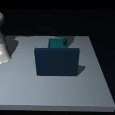

RGB-D 목표 추정, 관절 역기구학, 모터 제어와 그리퍼 접촉. 목표 좌표를 평가용 정답에서 가져오지 않습니다.
PANDA · RGB-D · CONTACT PHYSICS
RGB-D 파지 제어
큐브가 가려지거나 움직였을 때, 다시 관찰한 로봇과 한 번만 관찰한 로봇의 배치 결과를 비교합니다.
트레이 배치 성공률 관찰 전략 비교 · Python 시뮬레이션 · 4조건 × 20장면
- 단일 관찰
- 25% 20/80
- 추가 관찰·재시도 허용
- 75% 60/80
가림과 위치 변화에서 각각 0/20 → 20/20. 기본 집기와 작업 범위 밖에서는 두 방법의 성공 수가 같았습니다.
Python 실행 기록 · seed 107
첫 파지 실패 후 재시도로 배치 성공
첫 파지는 두 실행 모두 6.31초에 실패했습니다. 재시도를 켠 로봇은 11.25초 뒤 배치를 마쳤습니다.
브라우저에서 직접 계산하는 물리 시뮬레이션입니다. 카메라 렌더링 → RGB-D 위치 추정 → IK·모터 제어 → 접촉 집기. 아래 성공률은 별도의 Python 평가 결과입니다.
로봇이 본 장면카메라 입력과 검출 결과
가림 장면 미리보기Python 기록 · seed 100 · 추가 관찰

0.00초에 정면과 후면을 차례로 관측했습니다. 후면에서 큐브를 찾은 뒤 접근을 시작했습니다. 실행 원본
실행하면 실제 관측한 카메라 영상이 여기에 나타납니다.
청록 테두리는 픽셀에서 검출한 물체입니다. RGB-D와 카메라 보정으로 위치를 추정하며 평가용 정답 좌표를 전달하지 않습니다. 두 카메라는 고정된 가상 센서입니다.
판단과 행동 기록실패와 재시도가 발생한 시점
EVALUATION / HELD-OUT SEEDS 100–119
조건별 트레이 배치 성공률
개발 장면 10–14와 분리한 80개 장면. 같은 초기 배치에서 두 방법을 각각 실행했습니다.
| 평가 조건 | 단일 관찰 | 추가 관찰·재시도 | 실패 원인 | 실제 기록 |
|---|---|---|---|---|
| 실험 결과를 불러오는 중 | ||||
놓기 오차는 최종 물체 중심과 트레이 중심의 XY 거리입니다. 이동하지 않은 실패에서도 계산되므로 인식 오차와 구분합니다. 기록 보기에서는 해당 Python 실행을 재생합니다.
처리 시간·오차·충돌 및 실험 설정
처리 시간은 CPU에서 센서 렌더러 생성·인식·계획·물리 실행을 포함합니다. 병렬 평가의 CPU 경합을 포함하며 실제 로봇의 제어 지연이 아닙니다.
고정 설정과 소스 해시 ↓WHAT THIS PROJECT DEMONSTRATES
카메라 관측에서 그리퍼 제어까지
인식·판단·행동을 연결하고 실패를 조건별로 평가합니다. 접촉 집기는 MuJoCo에서 검증하며 실제 하드웨어 성능으로 주장하지 않습니다.
추가 관찰과 최대 1회 재시도. 시야 밖·범위 밖의 실패도 남깁니다. 관찰·관절 상태·결과를 함께 저장합니다.
고정 색상·알려진 큐브 크기·두 카메라의 단일 작업입니다. 학습 정책·VLA·ROS 2·실제 로봇 검증은 포함하지 않습니다.
Python 실행 방법 ↗